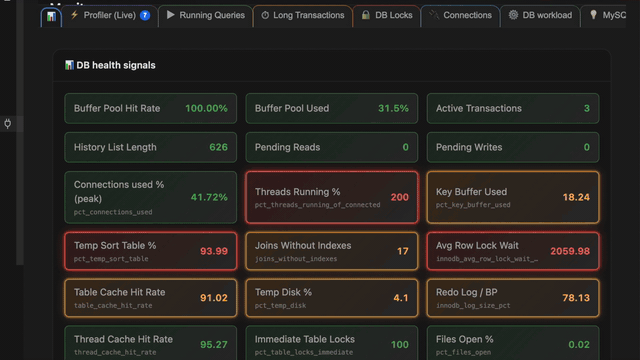
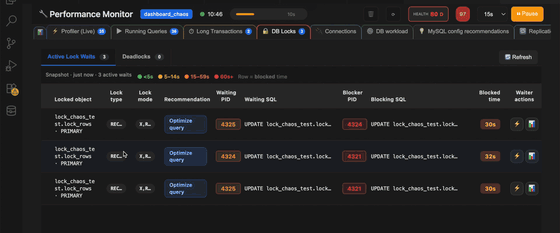

Performance Monitor (PM)
Live MySQL/MariaDB monitoring in one panel: health dashboards, Profiler (Live) with batch optimize, running queries and locks, replication, index hygiene, config recommendations, and a diagnostic query palette — all tied to a single connection session.
Overview
Performance Monitor (PM) opens as a webview panel scoped to one database connection. After you click ▶ Start, it polls the server on a schedule you choose and keeps a rolling in-memory history (up to ~2 hours at the current interval).
- Dashboard — DB health signals, connection pressure, query workload charts, locks/deadlocks, replication, unused indexes, and config audit summary.
- Profiler (Live) — captures query templates from Performance Schema, ranks them by impact, and supports Optimize All / Create Indexes (same engine as the Query Log Optimizer).
- Operational tabs — running queries, long transactions, lock waits, connections breakdown, Com_* workload, replication, slow-query digest, index hygiene, table design insights, and alerts.

PM is built for MySQL and MariaDB. PostgreSQL connections use other tools (Query Log Optimizer, PostgreSQL Query Optimizer) instead of this panel.
How to open
- Database tree — right-click a connection or database → 📊 Performance Monitor.
- Command Palette — search for Performance Monitor / debugger commands on your active connection.
- Reopen last —
mysql.performanceMonitor.reopenLastrestores the previous PM session when available.

Click ▶ Start to begin polling. The connection badge shows your schema context; after Start, the session database comes from SELECT DATABASE().
Header bar — session controls
| Control | What it does |
|---|---|
| Connection badge | Active schema / database and host. Tooltip explains session vs. tree context. |
| Session status | Stopped, Running for …, or paused state with elapsed duration. |
| Poll countdown | Progress bar until the next automatic refresh (hidden when stopped). |
| HEALTH score | Composite grade (A–F) and numeric score updated each poll. |
| Alert badge | Count of unacknowledged alerts (click ⚠️ tab). |
| Polling interval | 15s · 30s · 60s · 2m · 5m · 10m — controls profiler + metrics cadence. |
| ▶ Start | Begin monitoring (disabled while loading). |
| ⏸ Pause / ▶ Resume | Pause stops automatic polls but keeps data; Resume runs one immediate sample then continues. |
| ⟳ Refresh | Manual full refresh (profiler + metrics) while session is running. |
| 🗑️ Clear Old Data | Reset rolling history buffers in the panel (does not change server state). |
Tab bar
Tabs show badge counts when relevant. Dashboard and Alerts use icon-only tabs (hover for label).
| Tab | Badge | Purpose |
|---|---|---|
| 📊 Dashboard | — | At-a-glance health, workload charts, clickable summary tiles. |
| ⚡ Profiler (Live) | Active Query commands | Latency timeline + query template grid; batch optimize workflow. |
| ▶ Running Queries | Filtered active sessions | Live PROCESSLIST (non-idle); kill / optimize / explain. |
| ⏱ Long Transactions | Open InnoDB trx | information_schema.innodb_trx with age tiers. |
| 🔒 DB Locks | Active lock waits | Lock waits + deadlock history sub-tabs. |
| 🔌 Connections | — | Host and user connection breakdown + pie charts. |
| ⚙️ DB workload | — | Questions/Com_* rates and command counter table. |
| 💡 MySQL config recommendations | Critical + high findings | Heuristic audit of global variables + engine signals. |
| 🔁 Replication | Channels needing attention | Replica status, lag, errors, AI assist hooks. |
| 🐢 Slow Queries | Slow digest count | Embedded query digest + link to Query Log Optimizer. |
| 📇 Unused indexes | Unused + redundant rows | Index hygiene grids with copy/run DROP. |
| 📋 Table insights | — | NF/datatype/index heuristics on sampled rows. |
| ⚠️ Alerts | Unacknowledged | Session alerts with acknowledge / kill actions. |
Dashboard tab
The default view when PM opens. Requires Start for live numbers; tiles link to detail tabs when clicked.
Status strip
- Live / Paused / Stopped session indicator.
- Health grade pill (A/B good · C mid · D/F bad).
- Config pill — OK · Watch · Urgent count · error · pending.
- Legend: red = urgent, orange = watch, 🚩 on tiles.
DB health signals (18 tiles)
Color-coded grid at the top of Dashboard. Single-click a tile opens its related tab; double-click anywhere on the section opens MySQL config recommendations.
| Signal | Typical green | Opens tab |
|---|---|---|
| Buffer Pool Hit Rate | High hit % | MySQL config |
| Buffer Pool Used | <95% used | MySQL config |
| Active Transactions | 0–5 | Long Transactions |
| History List Length | <1000 | Long Transactions |
| Pending Reads | 0 | MySQL config |
| Pending Writes | 0 | MySQL config |
| Connections used % (peak) | <70% | MySQL config |
| Threads Running % | Low vs connected | Connections |
| Key Buffer Used | Within range | MySQL config |
| Temp Sort Table % | Low | MySQL config |
| Joins Without Indexes | 0 | Profiler (Live) |
| Avg Row Lock Wait | Low ms | DB Locks |
| Table Cache Hit Rate | High | MySQL config |
| Temp Disk % | Low | MySQL config |
| Redo Log / BP | Balanced ratio | MySQL config |
| Thread Cache Hit Rate | High | Connections |
| Immediate Table Locks | High % | DB Locks |
| Files Open % | Low | MySQL config |
Tiles show the internal metric key (e.g. pct_temp_sort_table) in small type. Orange/red borders match severity thresholds documented in each tile tooltip.
Summary tiles (click-through)
| Tile | Shows | Click opens |
|---|---|---|
| Connections | Open / max, Threads_running, sparklines, % of max | Connections tab |
| Active Alerts | Unacknowledged alert count | Alerts tab |
| Query execution | QPS gauge, read/write split, 30-minute line charts (Questions, slow share) | Running Queries (running count zone) |
| Locks / deadlocks | Wait count, recent deadlock flag | DB Locks tab |
| Long transactions | UNDO / ACTIVE / Not started counts | Long Transactions tab |
| Unused / redundant index size | % of total InnoDB index bytes | Unused indexes tab |
| MySQL config | Audit summary (critical/high/medium) | MySQL config recommendations tab |
| Engine resource signals | QPS, buffer pool, InnoDB I/O proxies | MySQL config (engine signals section) |
| Replication | Lag, IO/SQL thread state, error flag | Replication tab |
Analytics chart (bottom of Dashboard)
Top tables cumulative chart with toggle between views. Refresh Analytics recomputes from the server. Requires an active monitoring session with enough samples.
Profiler (Live) tab
Two-panel layout: latency timeline on top, query template grid below. Resizable divider; either panel can collapse.
Query Latency chart controls
| Control | Action |
|---|---|
| 📈 Metrics overlay | Toggle QPS / connections lines on the chart. |
| 🔍+ / 🔍− | Zoom in / out on time range. |
| Zoom % | 200% … 10% preset levels. |
| 📅 Custom range | Presets (5m, 15m, 30m, 1h, All) + slider; Apply / Cancel. |
| 🔄 Reset | Clear custom zoom (also ESC / double-click chart). |
| Display interval | Auto · 15s · 30s · 1m · 2m · 5m aggregation. |
| ▲ / ▼ | Collapse / expand chart panel. |
Template grid
Sortable columns: rank, impact, rating, fingerprint, response time, usage %, calls, avg time, actions, database, table, query score, rows examined, type, recommended indexes. Filter box searches template / sample SQL / schema.
Sub-tabs (same as Query Log Optimizer): Query Fingerprints · Table Usage · Database Usage · User Usage.
Profiler action bar
| Button | Action |
|---|---|
| ⚡ Optimize all Queries | Batch-analyze top templates; fills index recommendations. |
| Create Indexes + Validate ▼ | Validate (before/after EXPLAIN) or create only — opens Create Indexes overlay. |
| Export Index DDL ▼ | Export script file or copy to clipboard. |
| Row 📊 EXPLAIN / ⚡ Optimize / 📋 Copy | Single-query workbench or clipboard. |
| Refresh Analytics | Recompute profiler analytics when session has data. |
| Start New Session | Reset profiler capture (when stopped or to clear templates). |
See Create Indexes overlay for validation charts and drop actions.
Running Queries tab
Live information_schema.PROCESSLIST — idle Sleep/Daemon hidden by default.
| Toolbar control | Purpose |
|---|---|
| Filter | All · Time > … (with comparator + seconds) · With SQL only. |
| Show replication threads | Include replica I/O/SQL long-lived threads. |
| Filter text | Search user, host, DB, query text. |
| 🔄 Refresh | Immediate processlist snapshot. |
Duration color tiers use configurable thresholds (white → green → amber → red). Columns: #, Time, Query, State, Reason, Actions, Id, Database, Command, User, Host — all sortable.
Row actions: ⏹ Kill · ⚡ Query Optimizer · 📊 EXPLAIN (when SQL is optimizable).
Long Transactions tab
InnoDB transactions from information_schema.innodb_trx. Summary line: UNDO · ACTIVE · Not started counts.
Columns: #, Status, Time, Undo log, Lock struct, Query, State, Reason, Actions, Thread Id, Database, Table, User, Isolation. Row tint by age band. Actions: Kill · Optimize · EXPLAIN. Double-click a cell to copy.
DB Locks tab
Sub-tabs: Active Lock Waits (count badge) · Deadlocks. 🔄 Refresh runs lock-wait queries only (not full PM poll).
Wait severity legend: <5s · 5–14s · 15–59s · 60s+ (row = blocked time).
| Column group | Contents |
|---|---|
| Lock metadata | Family, Source, Locked object, Lock type, Lock mode, Recommendation |
| Waiter | Waiting PID, Waiting SQL, Blocked time, Waiter actions (⚡ / 📊) |
| Blocker | Blocker PID, Blocking SQL, Blocker actions, Kill |
Connections tab
Two side-by-side grids — By client host and By DB user — plus pie charts when data exists.
Columns: Name, Conns, ActiveConns, SleepConns, Active(%), Sleep(%), Total(%). Bar colors: red >80%, orange 50–80%. 🔄 Refresh re-queries PROCESSLIST.
DB workload tab
Gauge cards (when interval rates available): Total · Write · Read (select) · Insert · Update · Delete · Commits · Start transactions — each shows per sec and per min with relative bar fill.
Com_* counters table columns: Variable name, Value, Value %, Last increment, Increment % share.
MySQL config recommendations tab
Heuristic audit of SHOW GLOBAL VARIABLES + status-derived calculations (mysqltuner-style rows).
| Control / section | Purpose |
|---|---|
| Search | Look up a variable in loaded globals. |
| Refresh | Re-fetch global variables and re-run audit. |
| Findings table | Severity, variable, current vs recommended, rationale. |
| Engine signals | QPS, buffer pool hit %, InnoDB page I/O — session proxies (not OS CPU/RAM). |
| Variable search panel | Jump to a specific global variable value. |
Replication tab
For replicas: channel grid (lag, IO/SQL threads, last error, binlog positions), guidance cards, applier thread SQL, lag history table, raw JSON details.
| Button | Action |
|---|---|
| 🔄 Refresh | Re-query SHOW REPLICA / SLAVE STATUS. |
| Copy context for AI | Copy replica diagnostics text for external review. |
| Open AI Assist | Skyline AI Assist with replication context pre-loaded. |
| Fix with AI (per field) | AI help for a specific replica status field. |
Slow Queries tab
Embedded Query Digest from Performance Schema (filters: time window, limit, sort). Expand rows for full digest text.
⚡ Open Query Log Optimizer — opens the full Slow Query Log Analyzer panel (slow log file, mysql.slow_log, Optimize All, Create Indexes).
Unused indexes tab
Two grids: Unused indexes and Redundant indexes (sys.schema_redundant_indexes when available). Summary strip shows total InnoDB index bytes and hygiene percentages.
| Unused columns | Redundant columns |
|---|---|
| Schema, Schema size, Table, Index, Size, DROP SQL, Actions | Schema, Schema size, Table, Redundant index + cols, Dominant index + cols, Reason, Size, DROP SQL, Actions |
Actions: copy DROP statement · run DROP (with confirmation). 🔄 Refresh reloads from sys / Performance Schema. Expandable details explain computation and full report SQL.
Table insights tab
Sub-tabs: Top used tables (cached per connection) · All tables (on-demand, up to 24 non-empty tables).
All tables mode: Schema filter, table name contains, Run analysis. Grid columns include Rating, Table, DB design score, 1NF/2NF/3NF signals, datatype score, index score, index list, unused/redundant counts — sortable headers.
Alerts tab
Summary counts: Critical · Warning · Info (unacknowledged). Each alert card shows title, message, time.
| Button | When |
|---|---|
| Acknowledge | Dismiss active alert (moves to acknowledged list). |
| Kill | When alert includes a process id — sends KILL to server (privilege required). |
Diagnostic query palette
From PM or Command Palette (mysql.diagnostics.show): pick curated diagnostic SQL — wait events, bloat, missing indexes, etc. Results open in the normal SQL Results panel. See advanced diagnostics.
Data retention & maintenance
- PM stores rolling history in the webview session (metrics, profiler templates, charts) — not persisted across VS Code restarts.
- Clear Old Data (🗑️) wipes buffered history while keeping the session running.
- Long sessions: PM may show memory warnings and offers auto-pause after extended runtime.
- Lower polling interval temporarily when investigating spikes; restore 30s–60s for steady monitoring.
Tips
- Start on Dashboard for health signals, then drill into red/orange tiles.
- Use Profiler (Live) during load tests; pair Optimize All with the Query Optimizer for hard statements.
- Running Queries + DB Locks together diagnose blocking — kill blocker only when you understand impact.
- Refresh Unused indexes before large DROP campaigns; review redundant vs unused separately.
- Replication tab Copy context for AI speeds up lag/error triage without exposing credentials in chat.
- Related: Query Log Optimizer workflow · Query Profiler (statement-level tracing).